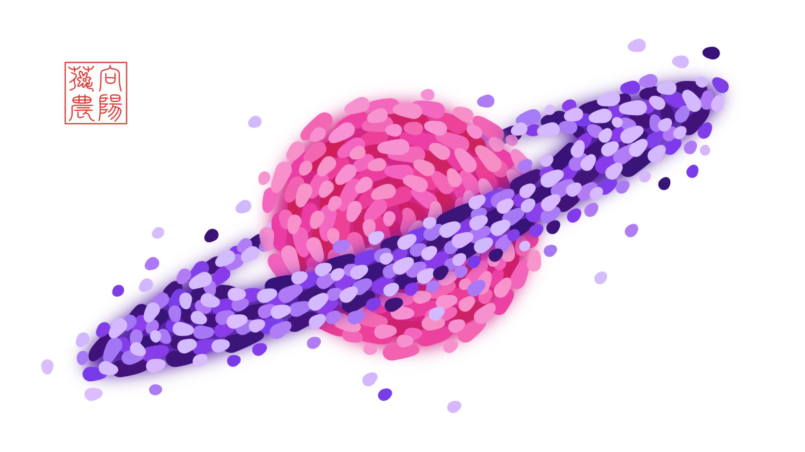

2. 送你一朵牵牛花¶
A Morning Glory for You
一天清晨，阳光唤醒了睡梦中的向阳花花农。昨晚悄悄爬上窗沿的牵牛花，和他一起伸着懒腰。那一朵朵淡紫色的小喇叭，在薄雾中缓缓摇曳，轻声哼出无人听过的小调。他趴在窗前安静地听了许久，仿佛它们在讲述一个悠远的故事。

2.1. 留¶
Stay
🎼 原曲：《萧煌奇 - 寂寞而已》
🌟 灵感：2024年电视剧《某某》。
🔍 大意：一开始陌生的两人，互相产生了难以克制的感情，在对方心中占据越来越重要的位置，从双向暗恋到双向奔赴。
Verse 1 委屈
[03集38:55 SW] 看似要好 话都没怎么讲过
[03集39:12 SW] 这种陌生 比感冒还难受
[05集47:04 SW] 想你留下 亏我努力了好久
[05集40:53 SW] 久到以为 我们超越朋友
Pre-chorus 无力
[05集48:09 SW] 莫名起风了 戛然风停了 算了……
Chorus 1 迷惘
[02集30:30 SW] 你给的欢喜 被我藏在嘴角
[01集44:12 SW] 扑通心跳 如蝉鸣般聒噪
[03集51:00 SW] 一瞬间 我世界颠倒
[02集02:50 SW] 一声哥 出于几分礼貌？
[12集20:00 SW] 一定是 疯掉！
Verse 2 心软
[03集13:41 JT] 很小心地示好 又不甘示弱
[02集44:42 JT] 像抒情文 无法直白说破
[03集29:18 JT] 如果这轮因果 就是结果
[03集49:55 JT] 其实我们 可以试着变熟
Chorus 2 羁绊
[05集16:08 JT] 不想你发现 是我为你伸张
[05集19:41 JT] 背着你 时间走得多漫长
[07集29:39 JT] 一起在 彩虹下游荡
[07集37:50 JT] 一根绳 绑上归属记号
[--集--:-- JT] 一牵手 糟糕！
Bridge 奔赴
[07集16:27 SW] 小流浪猫 拖行李箱
[01集38:29 SW] 我逮住 还想逃？
[07集38:42 SW] 有我守护 在你安心的地方
[04集38:10 JT] 过去不再重要
[08集39:37 JT] 现在我决定沿着光
[04集06:27 JT] 径直奔向 你的拥抱
Chorus 3 承诺
[06集37:32 SW] 留住你 是我最永恒的倔强
[05集31:34 SW] 别把我推开 随时能依靠
[06集35:20 SW] 不打烊 来一颗果糖
[06集35:00 SW] 不敷衍 卸下一切伪装
[--集--:-- SW] 不松手 抓牢
Chorus 4 承诺
[05集19:10 JT] 不会什么都不做 任你受伤
[07集06:19 JT] 麻烦和荣誉 全部与你共享
[08集27:57 JT] 一把钥匙 一眼脉脉对望
[06集36:05 JT] 一路喧嚣 日与夜 每分每秒
[06集34:20 JT & SW] 别后悔 不后悔 说好
2.2. 劫¶
Doom
🎼 原曲：《川崎鷹也 - 夕陽の上》（《川崎鹰也 - 夕阳之上》）
🌟 灵感：在情窦初开时，喜欢上一个不可能在一起的男孩。
🔍 大意：收到男孩的婚礼邀请后，年少时与他有关的记忆慢慢浮现——暧昧、暗恋、表白、拒绝、心碎、陌路、追悔。从记忆中醒过来时，才发现自己已经在婚礼现场，而幻想中的表白根本没发生过，与男孩的关系止步于暧昧和暗恋。如今男孩即将完婚，放下是最体面的选择。
Verse 1 婚约
拆开信封 是一张绯红请柬
囍气洋溢 择良辰结佳缘
婚纱照里 看新郎笑得多甜
如年少时 对我温柔满眼
Pre-chorus 1 萌动
那是很久以前 猝不及防的夏天
他呼吸 第一次 贴近我侧脸
难言情结 若隐若现
Chorus 1 暗恋
肆意暧昧 愈演愈烈 轻易就沦陷
期待转角处 和他擦肩
漫漫长夜 浮想联翩
什么关系？怎么分辨？直觉或错觉？
试探着 跨越界限
耗尽勇气 赌上了一切
Verse 2 拒绝
意料之中 这是我一厢情愿
然而拒绝 让人痛到极点
一字一句 不顾及我的尊严
狼狈心情 早已声嘶力竭
Pre-chorus 2 心碎
就像身中万箭 被推入万丈深渊
锋利又窒息的话 萦绕耳边
毁我世界 一地碎片
Chorus 2 陌路
刻意回避 视而不见 会好受一些
曾经的我们 渐行渐远
后来只剩下 敷衍寒暄
蓦然回首 时隔多年 依旧没忘却
都怪我 贪得无厌
形同陌路 也在所难免
Bridge 追悔
如果当初 坚守住底线
如果识破 玩笑的欺骗
还会不会诀别？
如果这次 放弃去冒险
如果心里话 锁在心里面
能不能 回到那个夏天？
能不能 把故事重写一遍？
Chorus 3 放下
如梦初醒 转眼之间 仪式将完结
男孩倾诉 神圣的誓言：
今生今世 忠贞不变
一往情深 埋葬心田 就让它湮灭
到此为止 别流连
是时候 跟过去说再见